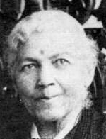

|

|

|
|
|
Harriet Ann Jacobs is now known as the author of Incidents in the
Life of a Slave Girl. Written by herself (1861), it is the most
important slave narrative by a woman. Jacobs is also important because
of the role she played as a relief worker among Black Civil War refugees
in Alexandria, Virginia, and Savannah, Georgia. Throughout most of the
twentieth century, Jacobs's autobiography was thought to be a novel by a
white writer, and her relief work was unknown. With the 1987 publication
of an annotated edition of her book, however, Jacobs became established
as the author of the most comprehensive antebellum autobiography by an
African-American woman.
Harriet Ann Jacobs was born into slavery in Edenton, North Carolina, in
1813. Her mother was Delilah, daughter of Molly Horniblow (slave) and
slave of Margaret Horniblow (mistress); her father was Daniel, a
carpenter, probably a son of the white Henry Jacobs and slave of Andrew
Knox, a doctor. Incidents is a first-person pseudonymous account of a
slave woman's sexual oppression and of her struggle for freedom. Written
in the first person by Jacobs's pseudonymous narrator "Linda Brent," the
book is a remarkably accurate (although incomplete) rendering of
Jacobs's life up to her 1853 emancipation. It shows her as a slave and
fugitive in the South, and as a fugitive in the North. In her narrative,
Jacobs's Linda Brent credits her family, and especially her grandmother
(who had gained her freedom and established a bakery in the town), with
sustaining her and her younger brother, John S. Jacobs, in their
youthful efforts to achieve a sense of selfhood despite their slave
status.
When Jacobs was six years old, her mother died, and she was taken into
the home of her mistress, who taught her to sew and to read, skills she
later used to support herself and to protest against slavery. But when
in 1825 Jacobs's mistress died, the slave girl was not freed, as she had
expected. Instead, her mistress's will bequeathed her, along with a
"bureau & work table & their contents," to a three-year-old niece, and
Jacobs was sent to live in the Edenton home of the little girl's father,
Dr. James Norcom ("Dr. Flint" in Incidents). As the slave girl
approached adolescence, the middle-aged Norcom subjected her to
unrelenting sexual harassment and, when she was sixteen, threatened her
with concubinage. To stop him, Jacobs became sexually involved with a
neighboring white attorney, young Samuel Tredwell Sawyer ("Mr. Sands").
Their alliance produced two children: Joseph (c.1829-?), called "Benny,"
and Louisa Matilda (1833-1917), called "Little Ellen" in the narrative.
When Jacobs was twenty-one, Norcom said if she did not agree to become
his concubine, he would send her away to one of his plantations. Jacobs
again rejected his sexual demands and was taken to a plantation. After
she learned that Norcom also planned to send her children out to the
country, fearing that once they became plantation slaves they would
never be free, she decided to act.
In June 1835, Jacobs escaped. She reasoned that if she was missing,
Norcom would be willing to sell her and the children and that their
father would buy and free them all. Joseph and Louisa were indeed bought
by Sawyer, who permitted them to continue living in town with Jacobs's
grandmother. Jacobs was hidden by neighbors, both Black and white, but
with Norcom searching for her, she was unable to escape from Edenton. As
the summer wore on, her grandmother and uncle built her a hiding place
in a tiny crawlspace above a porch in their home. For almost seven
years, Jacobs hid in this space, which, she wrote, measured seven feet
wide, nine feet long, and--at its tallest--three feet high.
Finally, in 1842, she escaped and was reunited with her children, who
had been sent north. In New York City, Jacobs found work as a domestic
in the family of litterateur Nathaniel Parker Willis. In 1849, she moved
to Rochester to join her brother, who had also become a fugitive from
slavery. John S. Jacobs was now an antislavery lecturer and activist,
and through him, Harriet Jacobs became part of the Rochester
abolitionist circle surrounding Frederick Douglass's newspaper, the
North Star. After passage of the 1850 Fugitive Slave Law, she left
Rochester for New York, where her North Carolina masters tried to seize
her and her children on the streets of Manhattan and Brooklyn.
Determined not to be sent back into slavery or to bow to the slave
system by permitting herself to be bought, Jacobs fled to Massachusetts.
In 1852, however, without her knowledge, Cornelia Grinnell Willis
arranged for her and her children to be bought from Norcom's family.
Jacobs and her children were free.
Amid conflicting emotions-determination to aid the antislavery cause,
humiliation at being purchased, and a deep impulse perhaps prompted by
the death of her beloved grandmother in Edenton-Jacobs decided to make
public the story of her sexual abuse in slavery. A few years earlier,
she had whispered her history to Amy Post, her Rochester Quaker
abolitionist-feminist friend, and Post had urged her to write a book
informing northern women about the sexual abuse of women slaves. Now
Jacobs was ready. Harriet Beecher Stowe's newly published Uncle Tom's
Cabin (1852) had become a runaway best-seller, and Jacobs's first
thought was to try to enlist Stowe to write her story. When she learned
that Stowe planned to incorporate her life story into The Key to
Uncle Tom's Cabin (1853), however,Jacobs decided instead to write
her story herself. After practicing her writing skills in letters she
sent to the New York Tribune, she began her book. Five years
later, it was finished. Soliciting letters of introduction to British
abolitionists from Boston antislavery leaders, Jacobs sailed to England
to sell her manuscript to a publisher. She returned home unsuccessful.
Finally, with the help of African-American abolitionist William C. Nell
and white abolitionist Lydia Maria Child, early in 1861 Jacobs brought
the book out herself. Incidents in the Life of a Slave Girl: Written
by Herself was published for the author, with an introduction by L.
Maria Child, who was identified as editor on the title page. Although
Jacobs's authorship was later forgotten, she was from the first
identified as "Linda Brent." Reviewed in the abolitionist and
African-American press, Incidents made Jacobs a minor celebrity
among its audience of antislavery women.
Within months, however, the nation was at war, and in the crisis, Jacobs
launched a second public career. Using her new celebrity, she approached
northern antislavery women for money and supplies for the
"contrabands"--Black refugees crowding behind the Union lines in
Washington, D.C., and Alexandria, Virginia (which had been occupied by
the army). With the support of Quaker groups and of the newly formed New
England Freedmen's Aid Society, in 1863 Harriet Jacobs and her daughter
Louisa went to Alexandria. There they provided emergency health care and
established the Jacobs Free School, a Black-owned and Black-taught
institution for the children of the refugees.
Throughout the war years, Jacobs and her daughter reported on their
southern relief efforts in the northern press and in England, where in
1862 her book had been published as The Deeper Wrong: Incidents in
the Life of a Slave Girl, Written Herself. In May 1864, Jacobs was
named a member of the Executive Committee of the Women's National Loyal
League, an antislavery feminist group mounting a mass petition campaign
to urge Congress to pass a constitutional amendment ending chattel
slavery. In July 1865, the mother-daughter team left Alexandria, and in
1866 they moved to Savannah, where they again worked to provide
educational and medical facilities for the freedmen. The following year,
Jacobs's daughter Louisa joined Susan B. Anthony and Charles Lenox
Remond to campaign for the Equal Rights Association--a group of radical
feminists and abolitionists who worked for the inclusion of the
enfranchisement of African-Americans and women in the New York State
Constitution.
In 1868, Harriet and Louisa Jacobs went to London to raise money for an
orphanage and home for the aged in the Black Savannah community. Aided
by British supporters of Garrisonian abolitionism, they raised £100
sterling for the Savannah project. Despite their success, however, they
recommended to their New York Quaker sponsors that the building not be
built. The Ku Klux Klan was riding and burning; it would not tolerate
the establishment of new Black institutions.
In the face of the increasing violence in the South, Jacobs and her
daughter retreated to Massachusetts. In Boston, Jacobs was briefly
employed as clerk of the fledgling New England Women's Club, perhaps
with the patronage of her old employer and friend Cornelia Grinnell
Willis and her New England Freedmen's Aid Society colleague Ednah Dow
Cheney, both club members. As the new decade began, Jacobs settled in
Cambridge, where for several years she ran a boardinghouse for Harvard
students and faculty.
When Harriet and Louisa Jacobs later moved to Washington, D.C., Harriet
continued to work among the destitute freedmen, and Louisa was employed
in the newly established "colored schools," then at Howard University.
They did not return south, and in 1892, Jacobs sold her grandmother's
house and lot in Edenton, property that her family had managed to
arrange for her to inherit, despite her earlier status as a fugitive.
When in 1896 the National Association of Colored Women held organizing
meetings in Washington, D.C., Louisa Jacobs apparently attended. The
following spring, Harriet Jacobs died at her Washington home. She is
buried in the Mount Auburn Cemetery, Cambridge.
Source: Darlene Clark Hine, ed. Black Women in America, Vol. 2
(New York: Oxford University Press, 2005), 123.
|